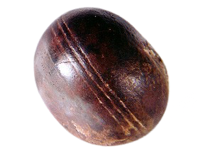

Klerksdorp Spheres
Date Made: Natural formation in 2–3 billion-year-old strata
Location Discovered: Ottosdal, South Africa
Rough Size: ~0.2–4 in (diameter)
Materials: Hematite or pyrophyllite
Mystery: Symmetry and grooves suggest machining to some observers; likely natural mineral growth/weathering.